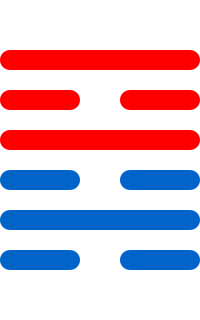

第六十四卦
未济卦

卦辞
亨，小狐汔济，濡其尾，无攸利。
未济卦象征未成、未完成与继续努力。卦辞意为：亨通，小狐几乎渡过，濡其尾，无所利。未济卦教导我们在未完成时要继续努力，不可放弃。
彖传
未济，亨，柔得中也。小狐汔济，未出中也。濡其尾，无攸利，不续终也。虽不当位，刚柔应也。
彖传说：未济，亨，柔得中也。小狐汔济，未出中也。濡其尾，无攸利，不续终也。虽不当位，刚柔应也。
象传
火在水上，未济。君子以慎辨物居方。
象传说：火在水上，就是未济卦。君子应当效法这种精神，慎辨物居方。火在水上，象征未完成的状态。
爻辞
初六：濡其尾，吝
濡其尾，困难。
初六爻位于最下方，濡其尾。濡其尾，吝，表示未济之始。
九二：曳其轮，贞吉
曳其轮，坚守正道吉祥。
九二爻得中，曳其轮。曳其轮，贞吉，表示未济之中。
六三：未济，征凶，利涉大川
未济，征伐凶险，利于涉越大河。
六三爻位置不当，未济。未济，征凶，利涉大川，表示未济之凶。
九四：贞吉，悔亡，震用伐鬼方，三年有赏于大国
坚守正道吉祥，悔恨消亡，震用伐鬼方，三年有赏于大国。
九四爻接近君位，贞吉。贞吉，悔亡，震用伐鬼方，三年有赏于大国，表示未济之赏。
六五：贞吉，无悔，君子之光，有孚，吉
坚守正道吉祥，无悔恨，君子之光，有诚信，吉祥。
六五爻居中尊位，贞吉。贞吉，无悔，君子之光，有孚，吉，表示未济之光。
上九：有孚于饮酒，无咎。濡其首，有孚失是
有孚于饮酒，无灾害。濡其首，有孚失是。
上九爻位于极点，有孚于饮酒。有孚于饮酒，无咎。濡其首，有孚失是，表示未济之终。